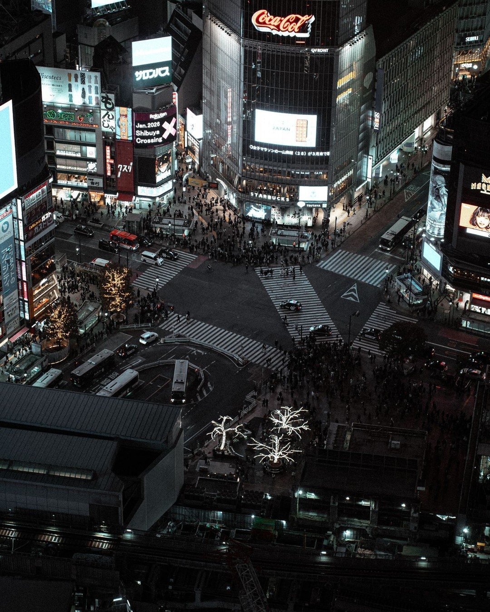
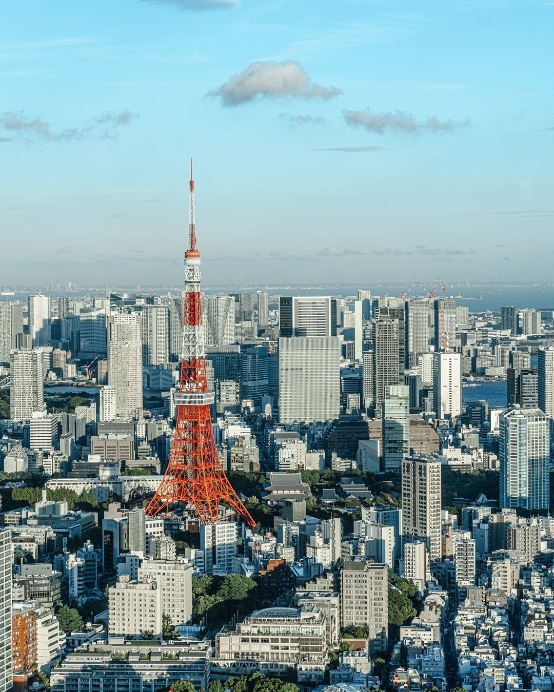
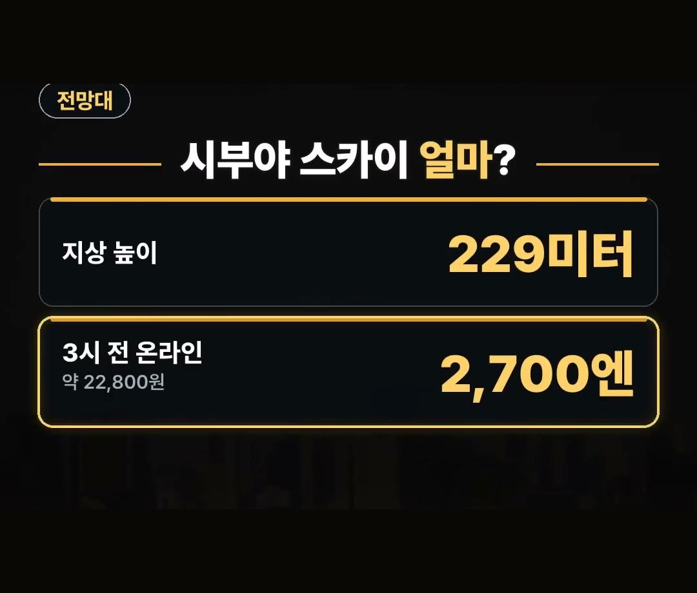
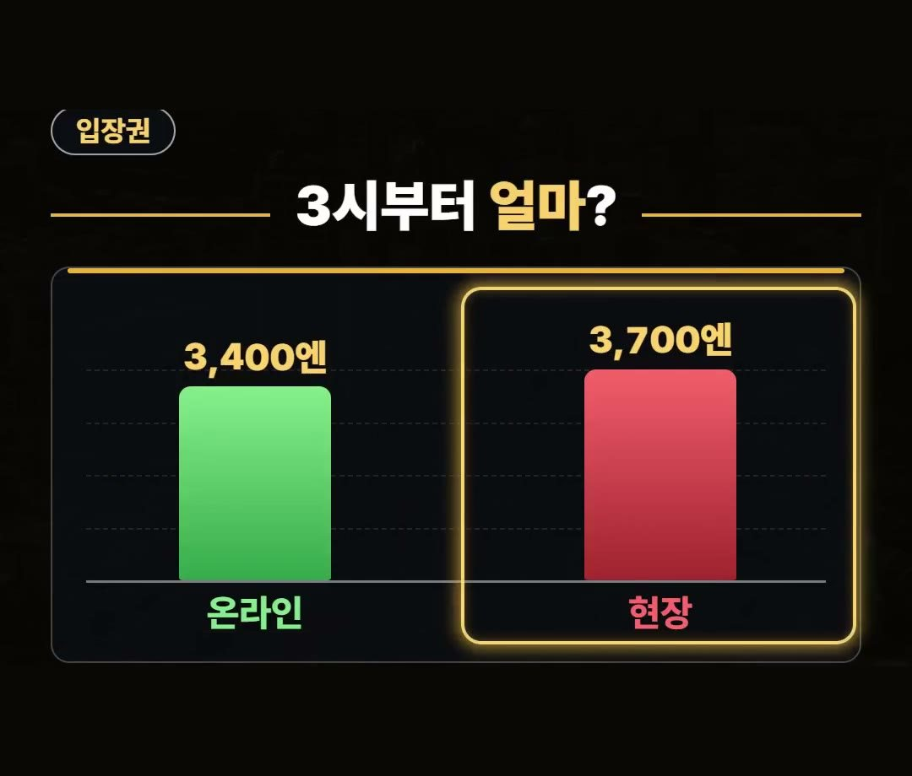
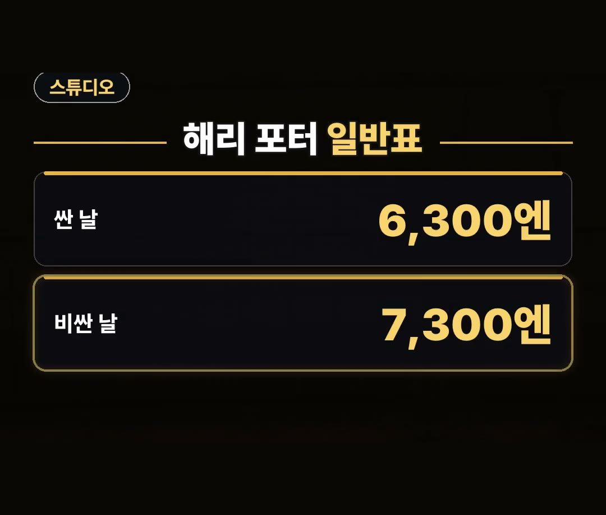

도쿄 여행 추천 시부야 스카이 요금 및 코스 안내
※ 이 글에는 제휴 링크가 포함되어 있으며, 링크를 통해 예약·구매하시면 일정 수수료를 받을 수 있습니다. (가격은 같습니다)
※ 이 포스팅은 쿠팡 파트너스 활동의 일환으로, 이에 따른 일정액의 수수료를 제공받습니다.
2026년 10월 도쿄 여행을 계획할 때 방문할 장소의 시간대별 입장 요금을 미리 확인하는 것이 필요합니다.
시부야 스카이처럼 오후 3시 전과 뒤의 온라인 성인 요금이 다른 곳이 있어 계획 수립 시 참고할 수 있습니다.
도쿄 여행 코스를 준비할 때 알고 계시면 좋은 요금 정보와 코스를 정리해 보았습니다.

안녕하세요, 돈 아끼는 연구소의 아낌 소장입니다!
2026년 10월 기준 시부야 스카이 성인 온라인 입장권은 오후 3시 전 2,700엔, 오후 3시부터는 3,400엔으로 달라지니 입장 시간을 꼭 기억하세요! 😊

도쿄 여행 추천 코스 요금 정보 안내
도쿄 여행 추천 코스를 세울 때 같은 표라고 하더라도 방문 시간이나 조건에 따라 값이 달라지는 경우가 있습니다.
시부야 스카이와 해리 포터 스튜디오 투어처럼 날짜나 시간대에 따라 금액 차이가 있는 장소를 사전에 알아 두는 것이 좋습니다.
도쿄 여행 추천 장소들의 요금 체계를 미리 파악해 두면 일정 마련에 도움이 됩니다.

도쿄 여행 추천 시기 요금 조건: 시부야 스카이
시부야 스카이는 지상 229미터 높이에 위치한 옥상 전망대입니다.
성인 온라인 입장권 가격은 오후 3시 전까지는 2,700엔으로, 한화 약 22,800원입니다.
그러나 2026년 10월 기준 오후 3시부터는 3,400엔으로 올라 약 28,700원이 됩니다.
현장 구매 가격은 3,700엔이며, 현장 표는 자리가 있을 때만 판매합니다.


도쿄 여행 추천 장소: 해리 포터 스튜디오 투어
해리 포터 스튜디오 투어 성인 일반표 요금은 날짜에 따라 6,300엔에서 7,300엔 사이입니다.
클룩에서는 10월 31일까지 도쿄 인기 어트랙션 대상 6% 할인 코드를 제공하고 있습니다.
해당 할인 코드는 최대 1만 원까지 적용되며, 일부 상품 한정으로 이용할 수 있습니다.

도쿄 여행 추천 코스 무료 입장: 센소지
센소지는 도쿄에서 가장 오래된 사찰로 입장이 무료입니다.
무료 입장이 가능한 센소지 방문 일정을 고려하여 동선을 작성해 보실 수 있습니다.
여행 현장에서 사용할 데이터는 이심으로 미리 준비해 두는 방법을 추천합니다.
정리
- 시부야 스카이 성인 온라인 표는 2026년 10월 기준 오후 3시 전 2,700엔(약 22,800원), 오후 3시부터 3,400엔(약 28,700원)이며 현장은 3,700엔입니다.
- 해리 포터 스튜디오 투어 성인 일반표는 날짜에 따라 6,300엔~7,300엔이고 클룩 10월 31일까지 6% 할인 코드가 있습니다.
- 센소지는 도쿄에서 가장 오래된 사찰로 입장료가 무료이며 데이터는 이심으로 미리 준비하시면 됩니다.
최저가 예약 링크는 아래에 모아 두었어요.
지금 쓸 수 있는 여행사 할인
- 📶 해외 데이터는 이심으로 미리 · 마이리얼트립 마이심 「일본 50% 1,400원~」 · 2개 이상 추가 할인 (마이심 화면 표시 기준 · 10/5 확인 · 값은 바뀔 수 있음)
- 🎟 클룩 도쿄 인기 어트랙션 6% 할인 코드 「TOKYOOCT」 (최대 1만 원 · 일부 상품 한정 · 쿠폰 취소 시 재발행 불가 · 예산 소진 시 조기 종료 · 10월 31일까지)
- 🎟 클룩 일본 어트랙션 5% 할인 코드 「일본어트랙션5%」 (최소 구매 금액 없음 · 최대 4천 원 · 일부 상품 제외 · 쿠폰 취소 시 재발행 불가 · 예산 소진 시 조기 종료 · 12월 31일까지)
※ 여행사 사정으로 조건이 바뀌거나 일찍 끝날 수 있어요. 예약 전에 여행사 화면에서 한 번 더 확인하세요. (2026-10-05 확인)
TOKYO도쿄FREE📘 무료 도쿄 가이드 전자책공항·교통 · 돈 아끼는 법 · 맛집 · 벌금·주의 · 귀국 날 · 체크리스트무료로 보기 ›📌 2026년 10월 기준 정보예요. 가격은 환율·시기에 따라 달라질 수 있어요.
영상 화면: Pexels (Dr. Rogelio Varela Jr., Lin Cadmus, Maksim Smirnov, Nelemson G, taro, yuki kiki)
사진: Pexels (Szymon Shields, Kuma Jio, Kristóf Balogh)
사진: Pixabay (Philippsaal)